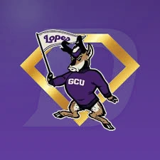
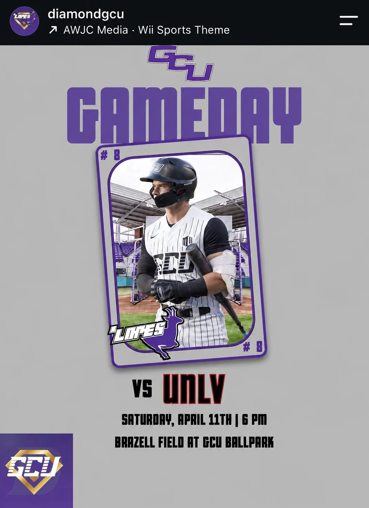
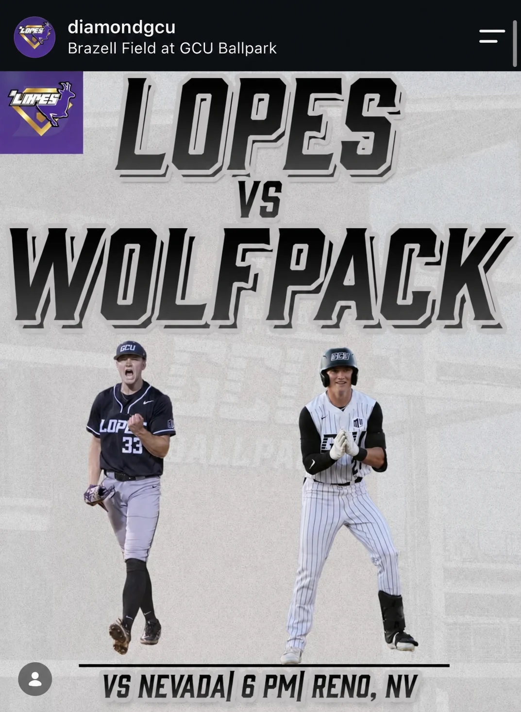
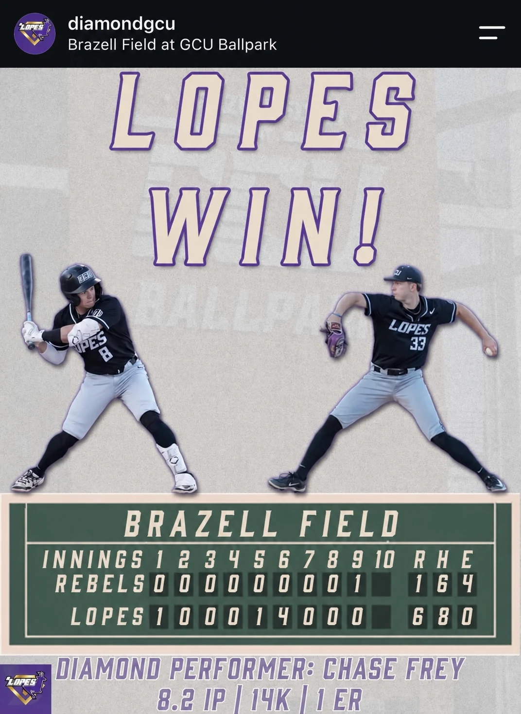
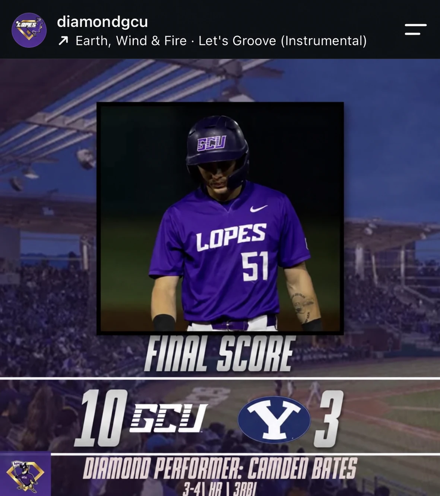
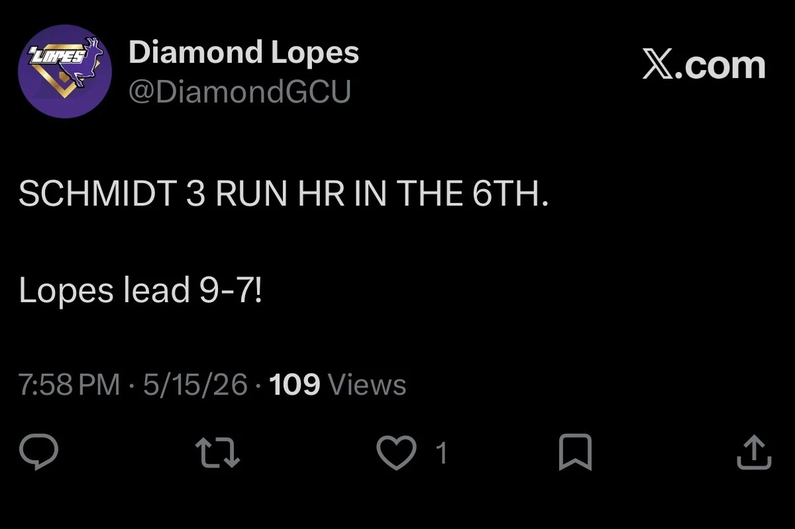
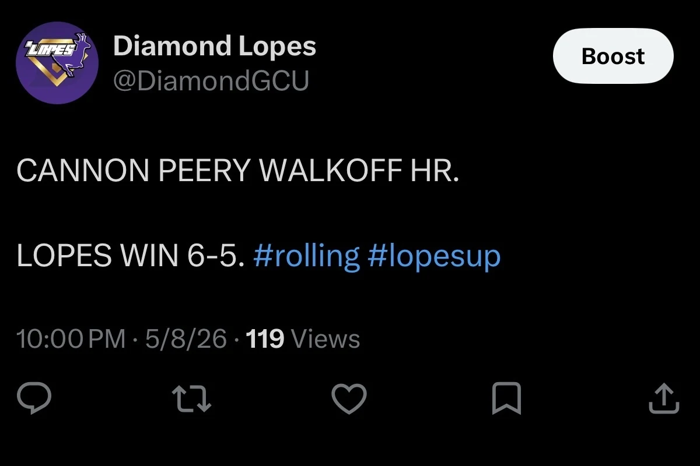
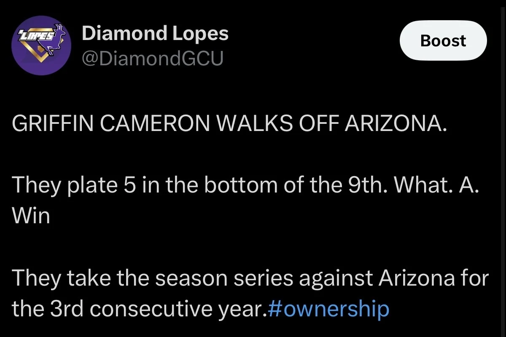
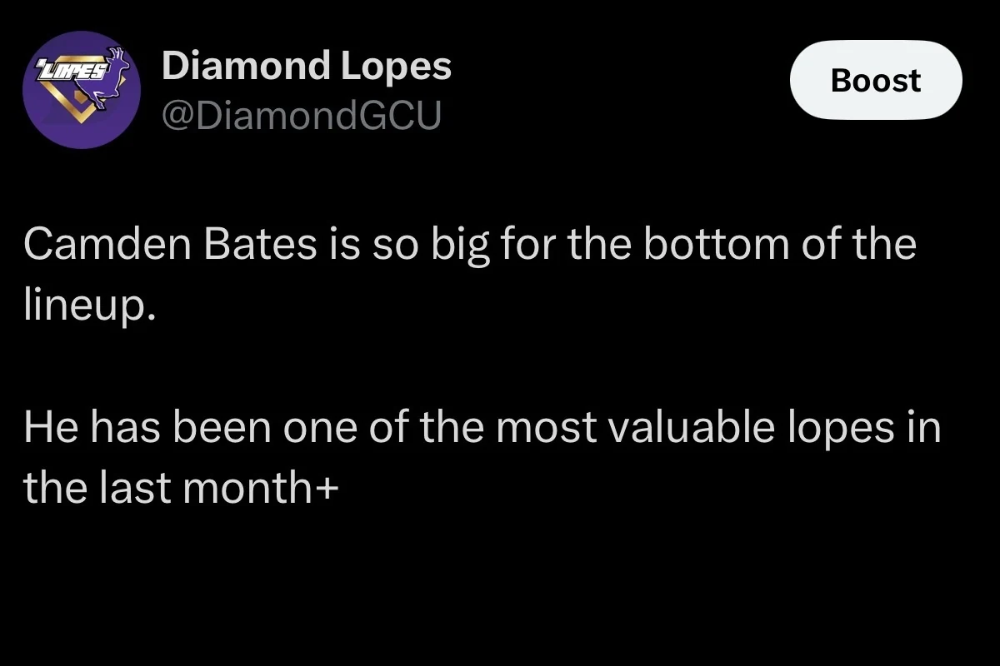
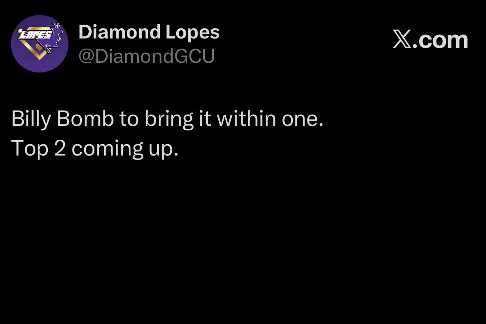

LOPES BASEBALL. EVERY INNING.
THE HOME OF DIAMOND GCU BASEBALL, FROM OUR SIDE OF THE FENCE.
Live updates, game-day graphics, scores, and stories for Grand Canyon baseball fans.
OUR TEAM.
OUR DIAMOND.
OUR STORY.
A home for GCU baseball, built by the people following every inning.
Diamond GCU brings together live game updates, original graphics, score coverage, and the conversation around Lopes baseball.
Meet Diamond GCU ↗
Follow the coverage.
The conversation starts here. The coverage continues on social.
FROM GAME DAY
TO THE FINAL OUT.
The game in graphics.
Game-day matchups, final scores, Diamond Performers, and the moments that define Lopes baseball.




Every pitch. As it happens.
Inning-by-inning updates, big plays, score changes, and the conversation around Lopes baseball.





FROM THE STANDS.
FOR THE FANS.
We started Diamond GCU to give Lopes fans another way to follow their team. Run by Tucker Dunseth and Timmy Ryan, Diamond GCU brings together live tweets, game-day and postgame graphics, team updates, and live-score contributions.
Tucker studies Sports & Entertainment Management at GCU. Timmy is pursuing sports journalism and color commentary. The shared focus is simple: get closer to the game and tell the stories around GCU baseball.
MORE BASEBALL.
MORE OF THE STORY.
Social coverage is the starting point. We’re building toward a dedicated home for GCU baseball reporting.